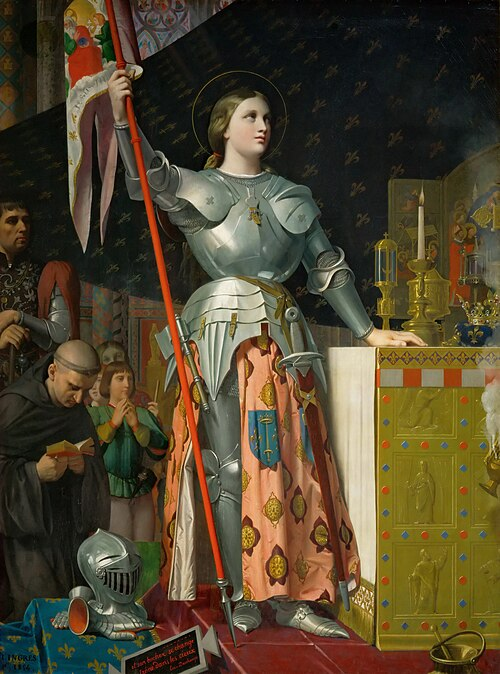

Mulheres na ciência: história e desafios contemporâneos
Desde os primórdios, as mulheres são subestimadas. Cada um com suas devidas atribuições: o homem, inteligente, provedor, o patriarca da casa; a mulher, cuidadora do lar, filhos e responsável por todas as atividades domésticas. Ser uma boa esposa ou filha vem desde o começo dos tempos: não opinar, não responder, mas sempre obedecer e não pode fazer algo melhor que um homem faça.
Na idade média, a mulher era tratada como um ser insignificante. Com a grande influência e poder da Igreja Católica na sociedade, as mulheres sofreram perseguições. De acordo com historiadores, cerca de 100 mil mulheres foram executadas durante o movimento caça às bruxas. Tudo o que se divergia do que era estabelecido pela Igreja eram apontados como bruxaria e as mulheres eram condenadas a fogueira.
Mas como sobreviver em uma sociedade sem acesso a serviços e direitos econômicos, políticos e sociais? Os direitos das mulheres vêm de um longo processo histórico.
Conheça algumas mulheres brilhantes da Ciência:
Florence Nightingale

Florence Nightingale, fundadora da Enfermagem moderna, tratou e cuidou dos feridos em batalhas, na Guerra da Crimeia (1853-1856). Florence percorria a noite, com uma lâmpada nas mãos até o local onde estava os soldados feridos, para cuidar dos seus pacientes. Em 1859, desenvolveu um projeto da Escola de Enfermagem do Hospital Saint Thomas, em Londres, hoje parte do King’s College London. O curso tinha duração de cerca de um ano, com todas as aulas ministradas por médicos. Seu nome também batiza o juramento e a medalha concedidos a profissionais da área, além do Dia Internacional da Enfermagem, celebrado em seu aniversário.
Marie Curie

Marie Curie, uma das cientistas mais importantes do campo de radioatividade, descobriu dois novos elementos químicos: o polônio e o rádio. Com isso, foram revelados que alguns materiais podem emitir energia por muito tempo, sem uma fonte externa. Curie percebeu que a radiação poderia ser usada como um certo tipo de tratamento para destruir células doentes no corpo humano. Atualmente, o tratamento é conhecido como radioterapia, e utiliza radiação para destruir células cancerígenas para combater o câncer.A cientista foi a primeira mulher a ganhar um Prêmio Nobel e única a ganhar dois prêmios em áreas diferentes: Física e Química.
Joana d'Arc

Conhecida como “Donzela de Orleans”, Joana D’Arc foi uma guerreira militar, alcançando a liderança do exército na França. Joana d’Arc afirmava receber orientações de São Miguel Arcanjo e das santas Catarina de Alexandria e Margarida de Antioquia. Segundo seu relato, essas vozes a instruíram a apoiar o delfim Carlos, posteriormente coroado como Carlos VII, e a expulsar os ingleses do território francês. Em 1429, Carlos enviou Joana a Orleães como parte de um exército de socorro, que conseguiu romper o cerco em apenas nove dias, conseguindo sair vitoriosa.
Após o fracasso na tentativa de retomar Paris, com o Cerco de Paris, a influência de Joana d’Arc entre a nobreza francesa diminuiu. Em 23 de maio de 1430, ela foi capturada em Compiègne pelos borguinhões, aliados dos ingleses, e entregue a um tribunal eclesiástico presidido pelo bispo Pierre Cauchon. Condenada por heresia, Joana foi executada na fogueira em 30 de maio de 1431, aos 19 anos, e posteriormente transformada em símbolo do patriotismo francês. Em 1456, uma revisão anulou sua condenação, e Joana foi declarada inocente; séculos depois, foi beatificada, em 1909, e canonizada, em 1920, pela Igreja Católica Romana.